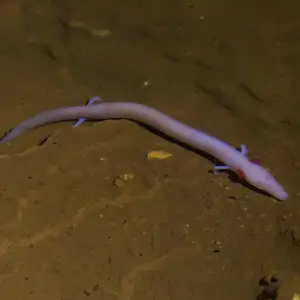

Axolotl
The Axolotl (*Ambystoma mexicanum*) is a species of aquatic salamander native to lakes near Mexico City. Known for its ability to regenerate limbs, spinal cord, heart, and other organs, it has become an important subject.
Read More
3 SPECIES
The Axolotl (*Ambystoma mexicanum*) is a species of aquatic salamander native to lakes near Mexico City. Known for its ability to regenerate limbs, spinal cord, heart, and other organs, it has become an important subject.
Read More
The Cane Toad (*Rhinella marina*) is a large, terrestrial toad native to Central and South America. It is known for its invasive nature and has become a significant problem in places like Australia, where it was introduced.
Read More
The Olm (*Proteus anguinus*) is a species of blind, aquatic salamander found in the cave systems of the Dinaric Alps in Europe. Known for its pale, pinkish skin and lack of functional eyes, the olm can live for over 100 years.
Read More